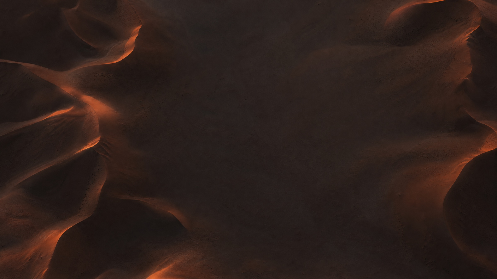

free and open source · 37 pointers
A tiny hand for Windows.
It points at things on your screen. Click to tap. Hold and drag to draw.
Version 1.0.2 · Windows 10 or later · 64-bit
Tap a hand, then draw with your finger
Point
The hand follows your mouse.
Tap
Clicks make a soft tap.
Draw
Lines fade after 3 seconds.
Ctrl+Alt+A turns it on or off. Esc puts it away and gives you your cursor back. Ctrl+Alt+X clears the drawing. Hold Alt to click normally.